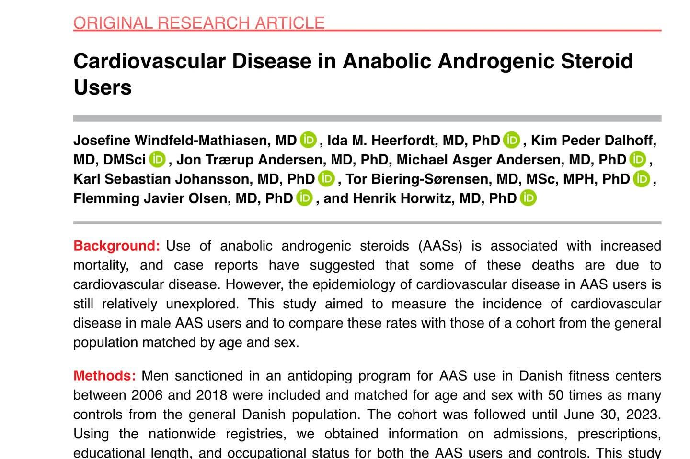

The dangers of raising androgen hormone levels (e.g. testosterone) excessively high.
#testosteroneHD #trtHD #cardiomyopathyHD #anabolicsteroidsHD
Louis shares Luigi Fontana's summary of a long-term cohort of 1,189 anabolic androgenic steroid users versus 59,450 matched controls, showing sharply higher rates of cardiovascular events even in recreational gym-goers. He warns against pushing androgen levels excessively high.
The dangers of raising androgen hormone levels (e.g. testosterone) excessively high.
#testosteroneHD #trtHD #cardiomyopathyHD #anabolicsteroidsHD
The Hidden Heart Risks of Anabolic Steroid Use: What You Need to Know
New research sheds light on the serious cardiovascular dangers linked to anabolic androgenic steroid (AAS) use in recreational athletes, meaning they engage in general fitness activities within gym settings without participating in any specific sport or competitive discipline, revealing alarming statistics that demand attention from both healthcare professionals and the public.
Paper · Circulation · 2025Cardiovascular Disease in Anabolic Androgenic Steroid Users.Conclusion: AAS use is associated with a substantially increased risk of cardiovascular disease in a large cohort with a long follow-up period.doi.orgIn a long-term study of 1,189 AAS users compared with 59,450 age- and sex-matched controls from the general population, the findings were clear: AAS use significantly increases the risk of life-threatening cardiovascular events.
🚨 Key Findings:
- 3x higher risk of acute myocardial infarction (heart attack)
- 9x higher risk of cardiomyopathy (heart muscle disease)
- 2.4x higher risk of venous thromboembolism (blood clots)
- 2.3x higher risk of arrhythmias (irregular heartbeat)
- 3.6x higher risk of heart failure
These risks persisted even after adjusting for age, education, and occupational status, highlighting the profound long-term impact of AAS on heart health.
🔬 Why Does This Matter?
AAS use doesn’t just boost muscle—it can quietly damage the heart, increasing the risk of severe conditions like heart failure, arrhythmias, and blood clots. The data suggest that even recreational fitness enthusiasts using AAS face serious health consequences.💡 Clinical Implications:
Healthcare providers should remain vigilant when treating patients with a history of AAS use, proactively screening for cardiovascular issues. This research also underscores the importance of education and public health initiatives aimed at raising awareness about the real, long-term risks of performance-enhancing drugs.⚠️ The Bottom Line:
The perceived short-term gains from AAS use come at a steep price—your heart health. It’s time to rethink the risks and prioritize long-term well-being over temporary performance boosts.
#CardiovascularHealth #SteroidRisks #HeartHealth #PublicHealth #Healthcare #FitnessAwareness #AAS #MedicalResearch #PreventiveCare #HealthEducation

Louis notes that excess exogenous testosterone is also an anabolic steroid and shares Luigi Fontana's summary of a Circulation study comparing 1,189 anabolic androgenic steroid users with 59,450 controls over 11 years. Users had several-fold higher risks of heart attack, revascularization, clots, arrhythmias, cardiomyopathy and heart failure.

Dr. Karl Nadolsky summarizes a study of 247 men: psychiatric diagnoses were 2.5-fold higher in current and past androgen users, and past users reported worse mood, anxiety and sexual function. Psychiatric comorbidity, more than low testosterone, tracked with depression and anxiety.

Reviews the evidence on statins and cancer. A 2012 meta-analysis of 134,537 participants in 22 RCTs found identical cancer incidence (1.4% per year) and mortality (0.5% per year) in statin users and non-users, and a 2023 meta-analysis of 35 RCTs found the same. Anticancer effects in specific contexts remain preclinical or suggestive.
A video from a medical-education channel on how urolithin A, made by gut bacteria from pomegranate and walnut ellagitannins, may help the stiff heart of HFpEF through mitochondrial quality control. The post describes the work as pre-clinical.

Luigi Fontana's summary of an NEJM trial of lepodisiran, an siRNA that blocks hepatic Lp(a) production. At the 400 mg dose Lp(a) fell by 93.9% placebo-adjusted, lasting up to a year, with only mild injection-site reactions. It offers a potential option for people with genetically high Lp(a) who cannot lower it with lifestyle or standard drugs.

A Circulation pilot study led by Vanderbilt found participants treated with the SGLT2 inhibitor empagliflozin had reduced monocyte-platelet aggregates, clusters of immune cells and platelets linked to cardiovascular damage. It suggests diabetes drugs may also reduce vascular inflammation, though this is a small pilot.